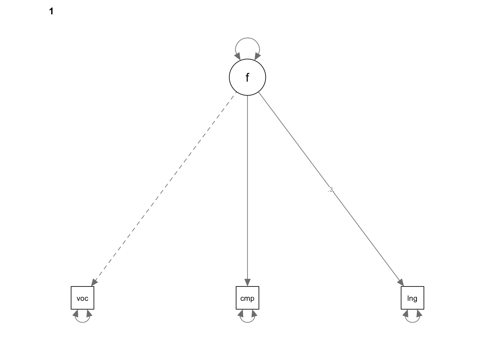
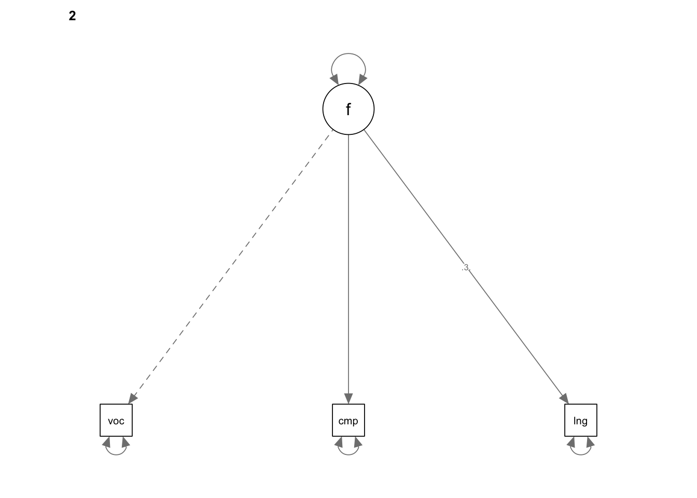

library(lavaan); library(semPlot)7 Models with Mean Structures
7.1 Syntax - R - MIMIC model
MATHSINGLEGROUP.cor <- '
1.000
0.747 1.000
0.736 0.666 1.000
0.092 0.080 0.079 1.000'
MATHSINGLEGROUP.SDs <- c(37.24, 36.97, 46.03, 0.50)
MATHSINGLEGROUP.cov <- getCov(MATHSINGLEGROUP.cor, sds = MATHSINGLEGROUP.SDs, names = c("math", "prob", "proc", "dummy"))Warning: 'getCov' is deprecated.
Use 'lav_getcov' instead.
See help("Deprecated")MIMIC.model <- '
f =~ math + prob + proc
f ~ dummy
dummy ~~ dummy'
MIMIC.fit <- sem(MIMIC.model, sample.cov = MATHSINGLEGROUP.cov, sample.nobs = 2000)
summary(MIMIC.fit, fit.measures = TRUE, standardized = TRUE, rsquare = TRUE)lavaan 0.6-21 ended normally after 153 iterations
Estimator ML
Optimization method NLMINB
Number of model parameters 8
Number of observations 2000
Model Test User Model:
Test statistic 0.064
Degrees of freedom 2
P-value (Chi-square) 0.968
Model Test Baseline Model:
Test statistic 3349.268
Degrees of freedom 6
P-value 0.000
User Model versus Baseline Model:
Comparative Fit Index (CFI) 1.000
Tucker-Lewis Index (TLI) 1.002
Loglikelihood and Information Criteria:
Loglikelihood user model (H0) -30402.179
Loglikelihood unrestricted model (H1) -30402.146
Akaike (AIC) 60820.357
Bayesian (BIC) 60865.164
Sample-size adjusted Bayesian (SABIC) 60839.748
Root Mean Square Error of Approximation:
RMSEA 0.000
90 Percent confidence interval - lower 0.000
90 Percent confidence interval - upper 0.000
P-value H_0: RMSEA <= 0.050 1.000
P-value H_0: RMSEA >= 0.080 0.000
Standardized Root Mean Square Residual:
SRMR 0.001
Parameter Estimates:
Standard errors Standard
Information Expected
Information saturated (h1) model Structured
Latent Variables:
Estimate Std.Err z-value P(>|z|) Std.lv Std.all
f =~
math 1.000 33.832 0.909
prob 0.898 0.021 43.630 0.000 30.384 0.822
proc 1.102 0.026 42.916 0.000 37.274 0.810
Regressions:
Estimate Std.Err z-value P(>|z|) Std.lv Std.all
f ~
dummy 6.734 1.592 4.231 0.000 0.199 0.099
Variances:
Estimate Std.Err z-value P(>|z|) Std.lv Std.all
dummy 0.250 0.008 31.623 0.000 0.250 1.000
.math 241.519 18.975 12.729 0.000 241.519 0.174
.prob 442.883 19.819 22.347 0.000 442.883 0.324
.proc 728.355 31.242 23.314 0.000 728.355 0.344
.f 1133.275 46.117 24.574 0.000 0.990 0.990
R-Square:
Estimate
math 0.826
prob 0.676
proc 0.656
f 0.0107.2 Syntax - R - Structured Means Modeling
SMM.G1.cor <- '
1.000
0.738 1.000
0.714 0.645 1.000'
SMM.G1.SDs <- c(37.09, 37.33, 45.10)
SMM.G1.means <- c(685.34, 679.10, 694.60)
SMM.G2.cor <- '
1.000
0.752 1.000
0.754 0.684 1.000'
SMM.G2.SDs <- c(37.07, 36.36, 46.67)
SMM.G2.means <- c(692.18, 685.03, 701.84)
SMM.G1.cov <- getCov(SMM.G1.cor, sds = SMM.G1.SDs, names = c("math", "prob", "proc"))
SMM.G2.cov <- getCov(SMM.G2.cor, sds = SMM.G2.SDs, names = c("math", "prob", "proc"))
SMM.model <- 'f =~ math + prob + proc'
SMM.fit <- cfa(SMM.model, sample.cov = list(SMM.G1.cov, SMM.G2.cov), sample.mean = list(SMM.G1.means, SMM.G2.means), sample.nobs = c(1000, 1000), group.equal = c("loadings", "intercepts"))
summary(SMM.fit, fit.measures = TRUE, standardized = TRUE, rsquare = TRUE)lavaan 0.6-21 ended normally after 438 iterations
Estimator ML
Optimization method NLMINB
Number of model parameters 19
Number of equality constraints 5
Number of observations per group:
Group 1 1000
Group 2 1000
Model Test User Model:
Test statistic 4.246
Degrees of freedom 4
P-value (Chi-square) 0.374
Test statistic for each group:
Group 1 2.231
Group 2 2.015
Model Test Baseline Model:
Test statistic 3313.997
Degrees of freedom 6
P-value 0.000
User Model versus Baseline Model:
Comparative Fit Index (CFI) 1.000
Tucker-Lewis Index (TLI) 1.000
Loglikelihood and Information Criteria:
Loglikelihood user model (H0) -28947.160
Loglikelihood unrestricted model (H1) -28945.037
Akaike (AIC) 57922.320
Bayesian (BIC) 58000.732
Sample-size adjusted Bayesian (SABIC) 57956.254
Root Mean Square Error of Approximation:
RMSEA 0.008
90 Percent confidence interval - lower 0.000
90 Percent confidence interval - upper 0.049
P-value H_0: RMSEA <= 0.050 0.956
P-value H_0: RMSEA >= 0.080 0.000
Standardized Root Mean Square Residual:
SRMR 0.016
Parameter Estimates:
Standard errors Standard
Information Expected
Information saturated (h1) model Structured
Group 1 [Group 1]:
Latent Variables:
Estimate Std.Err z-value P(>|z|) Std.lv Std.all
f =~
math 1.000 33.292 0.901
prob (.p2.) 0.898 0.021 43.710 0.000 29.896 0.810
proc (.p3.) 1.105 0.026 43.059 0.000 36.800 0.803
Intercepts:
Estimate Std.Err z-value P(>|z|) Std.lv Std.all
.math (.p8.) 685.404 1.142 600.137 0.000 685.404 18.543
.prob (.p9.) 679.045 1.085 626.045 0.000 679.045 18.393
.proc (.10.) 694.503 1.344 516.872 0.000 694.503 15.149
Variances:
Estimate Std.Err z-value P(>|z|) Std.lv Std.all
.math 257.931 25.677 10.045 0.000 257.931 0.189
.prob 469.226 28.390 16.528 0.000 469.226 0.344
.proc 747.461 44.332 16.860 0.000 747.461 0.356
f 1108.340 60.376 18.357 0.000 1.000 1.000
R-Square:
Estimate
math 0.811
prob 0.656
proc 0.644
Group 2 [Group 2]:
Latent Variables:
Estimate Std.Err z-value P(>|z|) Std.lv Std.all
f =~
math 1.000 33.943 0.913
prob (.p2.) 0.898 0.021 43.710 0.000 30.480 0.831
proc (.p3.) 1.105 0.026 43.059 0.000 37.519 0.817
Intercepts:
Estimate Std.Err z-value P(>|z|) Std.lv Std.all
.math (.p8.) 685.404 1.142 600.137 0.000 685.404 18.446
.prob (.p9.) 679.045 1.085 626.045 0.000 679.045 18.508
.proc (.10.) 694.503 1.344 516.872 0.000 694.503 15.122
f 6.719 1.590 4.227 0.000 0.198 0.198
Variances:
Estimate Std.Err z-value P(>|z|) Std.lv Std.all
.math 228.586 23.731 9.632 0.000 228.586 0.166
.prob 416.978 25.698 16.226 0.000 416.978 0.310
.proc 701.501 41.356 16.962 0.000 701.501 0.333
f 1152.102 61.736 18.662 0.000 1.000 1.000
R-Square:
Estimate
math 0.834
prob 0.690
proc 0.667# obtain model-implied (fitted) covariance matrix and mean vector
fitted(SMM.fit) $`Group 1`
$`Group 1`$cov
math prob proc
math 1366.271
prob 995.289 1362.995
proc 1225.120 1100.158 2101.666
$`Group 1`$mean
math prob proc
685.404 679.045 694.503
$`Group 2`
$`Group 2`$cov
math prob proc
math 1380.688
prob 1034.588 1346.038
proc 1273.494 1143.597 2109.176
$`Group 2`$mean
math prob proc
692.123 685.079 701.931 #obtain unstandardized residuals of a fitted model
resid(SMM.fit)$`Group 1`
$`Group 1`$type
[1] "raw"
$`Group 1`$cov
math prob proc
math 8.021
prob 25.502 29.140
proc -31.965 -15.333 -69.690
$`Group 1`$mean
math prob proc
-0.064 0.055 0.097
$`Group 2`
$`Group 2`$type
[1] "raw"
$`Group 2`$cov
math prob proc
math -7.878
prob -22.007 -25.310
proc 29.665 15.936 66.734
$`Group 2`$mean
math prob proc
0.057 -0.049 -0.091 #obtain standardized residuals of a fitted model
resid(SMM.fit, type="standardized")$`Group 1`
$`Group 1`$type
[1] "standardized"
$`Group 1`$cov
math prob proc
math 0.821
prob 2.608 1.758
proc -2.534 -0.888 -2.584
$`Group 1`$mean
math prob proc
-0.357 0.176 0.245
$`Group 2`
$`Group 2`$type
[1] "standardized"
$`Group 2`$cov
math prob proc
math -0.974
prob -2.850 -1.804
proc 2.808 1.131 2.953
$`Group 2`$mean
math prob proc
0.372 -0.185 -0.257 7.2.1 Configural invariance model
SMM.reading.G1.corr <- '
1.00
0.77 1.00
0.63 0.65 1.00'
SMM.reading.G1.SDs <- c(48.21, 40.32, 39.13)
SMM.reading.G1.means <- c(692.36, 680.63, 654.31)
SMM.reading.G2.corr <- '
1.00
0.78 1.00
0.65 0.65 1.00'
SMM.reading.G2.SDs <- c(45.88, 39.69, 38.37)
SMM.reading.G2.means <- c(709.47, 696.67, 669.17)
SMM.reading.G1.cov <- getCov(SMM.reading.G1.corr, sds = SMM.reading.G1.SDs, names = c("voc", "comp", "lang"))
SMM.reading.G2.cov <- getCov(SMM.reading.G2.corr, sds = SMM.reading.G2.SDs, names = c("voc", "comp", "lang"))
SMM.reading.model <- 'f =~ voc + comp + lang'
SMM.reading.configural.fit <- cfa(SMM.reading.model, sample.cov = list(SMM.reading.G1.cov, SMM.reading.G2.cov), sample.mean = list(SMM.reading.G1.means, SMM.reading.G2.means), sample.nobs = c(1000, 1000), std.lv = TRUE)
summary(SMM.reading.configural.fit, fit.measures = TRUE, standardized = TRUE, rsquare = TRUE, modindices = TRUE)lavaan 0.6-21 ended normally after 25 iterations
Estimator ML
Optimization method NLMINB
Number of model parameters 18
Number of observations per group:
Group 1 1000
Group 2 1000
Model Test User Model:
Test statistic 0.000
Degrees of freedom 0
Test statistic for each group:
Group 1 0.000
Group 2 0.000
Model Test Baseline Model:
Test statistic 3103.084
Degrees of freedom 6
P-value 0.000
User Model versus Baseline Model:
Comparative Fit Index (CFI) 1.000
Tucker-Lewis Index (TLI) 1.000
Loglikelihood and Information Criteria:
Loglikelihood user model (H0) -29352.796
Loglikelihood unrestricted model (H1) -29352.796
Akaike (AIC) 58741.591
Bayesian (BIC) 58842.408
Sample-size adjusted Bayesian (SABIC) 58785.221
Root Mean Square Error of Approximation:
RMSEA 0.000
90 Percent confidence interval - lower 0.000
90 Percent confidence interval - upper 0.000
P-value H_0: RMSEA <= 0.050 NA
P-value H_0: RMSEA >= 0.080 NA
Standardized Root Mean Square Residual:
SRMR 0.000
Parameter Estimates:
Standard errors Standard
Information Expected
Information saturated (h1) model Structured
Group 1 [Group 1]:
Latent Variables:
Estimate Std.Err z-value P(>|z|) Std.lv Std.all
f =~
voc 41.627 1.312 31.723 0.000 41.627 0.864
comp 35.920 1.085 33.104 0.000 35.920 0.891
lang 28.522 1.117 25.531 0.000 28.522 0.729
Intercepts:
Estimate Std.Err z-value P(>|z|) Std.lv Std.all
.voc 692.360 1.524 454.373 0.000 692.360 14.369
.comp 680.630 1.274 534.082 0.000 680.630 16.889
.lang 654.310 1.237 529.043 0.000 654.310 16.730
Variances:
Estimate Std.Err z-value P(>|z|) Std.lv Std.all
.voc 589.043 50.404 11.686 0.000 589.043 0.254
.comp 333.838 35.308 9.455 0.000 333.838 0.206
.lang 716.143 37.851 18.920 0.000 716.143 0.468
f 1.000 1.000 1.000
R-Square:
Estimate
voc 0.746
comp 0.794
lang 0.532
Group 2 [Group 2]:
Latent Variables:
Estimate Std.Err z-value P(>|z|) Std.lv Std.all
f =~
voc 40.500 1.229 32.946 0.000 40.500 0.883
comp 35.036 1.063 32.946 0.000 35.036 0.883
lang 28.225 1.088 25.947 0.000 28.225 0.736
Intercepts:
Estimate Std.Err z-value P(>|z|) Std.lv Std.all
.voc 709.470 1.450 489.247 0.000 709.470 15.471
.comp 696.670 1.254 555.346 0.000 696.670 17.562
.lang 669.170 1.213 551.775 0.000 669.170 17.449
Variances:
Estimate Std.Err z-value P(>|z|) Std.lv Std.all
.voc 462.631 43.889 10.541 0.000 462.631 0.220
.comp 346.219 32.845 10.541 0.000 346.219 0.220
.lang 674.110 35.529 18.974 0.000 674.110 0.458
f 1.000 1.000 1.000
R-Square:
Estimate
voc 0.780
comp 0.780
lang 0.542
Modification Indices:
[1] lhs op rhs block group level mi epc
[9] sepc.lv sepc.all sepc.nox
<0 rows> (or 0-length row.names)7.2.2 Metric invariance/factor loading invariance
Note: For the metric and scalar invariance models, the latent factors are identified using the reference indicator approach. The factor variance for group 1 was NOT fixed at 1. The “std.lv = TRUE” argument should not be used because if it is used, all factor variances would be forced to be equal to 1.
SMM.reading.metric.fit <- cfa(SMM.reading.model, sample.cov = list(SMM.reading.G1.cov, SMM.reading.G2.cov), sample.mean = list(SMM.reading.G1.means, SMM.reading.G2.means), sample.nobs = c(1000, 1000), group.equal = "loadings")
summary(SMM.reading.metric.fit, fit.measures = TRUE, standardized = TRUE, rsquare = TRUE, modindices = TRUE)Warning: lavaan->modificationIndices():
the modindices() function ignores equality constraints; use lavTestScore()
to assess the impact of releasing one or multiple constraints.lavaan 0.6-21 ended normally after 120 iterations
Estimator ML
Optimization method NLMINB
Number of model parameters 18
Number of equality constraints 2
Number of observations per group:
Group 1 1000
Group 2 1000
Model Test User Model:
Test statistic 0.105
Degrees of freedom 2
P-value (Chi-square) 0.949
Test statistic for each group:
Group 1 0.053
Group 2 0.052
Model Test Baseline Model:
Test statistic 3103.084
Degrees of freedom 6
P-value 0.000
User Model versus Baseline Model:
Comparative Fit Index (CFI) 1.000
Tucker-Lewis Index (TLI) 1.002
Loglikelihood and Information Criteria:
Loglikelihood user model (H0) -29352.848
Loglikelihood unrestricted model (H1) -29352.796
Akaike (AIC) 58737.696
Bayesian (BIC) 58827.311
Sample-size adjusted Bayesian (SABIC) 58776.478
Root Mean Square Error of Approximation:
RMSEA 0.000
90 Percent confidence interval - lower 0.000
90 Percent confidence interval - upper 0.005
P-value H_0: RMSEA <= 0.050 0.996
P-value H_0: RMSEA >= 0.080 0.000
Standardized Root Mean Square Residual:
SRMR 0.003
Parameter Estimates:
Standard errors Standard
Information Expected
Information saturated (h1) model Structured
Group 1 [Group 1]:
Latent Variables:
Estimate Std.Err z-value P(>|z|) Std.lv Std.all
f =~
voc 1.000 41.545 0.863
comp (.p2.) 0.864 0.020 42.989 0.000 35.897 0.891
lang (.p3.) 0.691 0.019 36.630 0.000 28.713 0.732
Intercepts:
Estimate Std.Err z-value P(>|z|) Std.lv Std.all
.voc 692.360 1.522 454.880 0.000 692.360 14.385
.comp 680.630 1.274 534.310 0.000 680.630 16.896
.lang 654.310 1.241 527.453 0.000 654.310 16.680
Variances:
Estimate Std.Err z-value P(>|z|) Std.lv Std.all
.voc 590.690 46.241 12.774 0.000 590.690 0.255
.comp 334.089 31.891 10.476 0.000 334.089 0.206
.lang 714.401 37.411 19.096 0.000 714.401 0.464
f 1726.008 98.323 17.555 0.000 1.000 1.000
R-Square:
Estimate
voc 0.745
comp 0.794
lang 0.536
Group 2 [Group 2]:
Latent Variables:
Estimate Std.Err z-value P(>|z|) Std.lv Std.all
f =~
voc 1.000 40.571 0.884
comp (.p2.) 0.864 0.020 42.989 0.000 35.056 0.883
lang (.p3.) 0.691 0.019 36.630 0.000 28.040 0.733
Intercepts:
Estimate Std.Err z-value P(>|z|) Std.lv Std.all
.voc 709.470 1.452 488.777 0.000 709.470 15.456
.comp 696.670 1.255 555.092 0.000 696.670 17.554
.lang 669.170 1.209 553.421 0.000 669.170 17.501
Variances:
Estimate Std.Err z-value P(>|z|) Std.lv Std.all
.voc 460.883 40.602 11.351 0.000 460.883 0.219
.comp 346.272 30.361 11.405 0.000 346.272 0.220
.lang 675.787 35.137 19.233 0.000 675.787 0.462
f 1646.030 92.054 17.881 0.000 1.000 1.000
R-Square:
Estimate
voc 0.781
comp 0.780
lang 0.538
Modification Indices:
lhs op rhs block group level mi epc sepc.lv sepc.all sepc.nox
1 f =~ voc 1 1 1 0.034 0.008 0.324 0.007 0.007
2 f =~ voc 2 2 1 0.034 -0.008 -0.316 -0.007 -0.0077.2.3 Scalar invariance/intercept invariance model
SMM.reading.scalar.fit <- cfa(SMM.reading.model, sample.cov = list(SMM.reading.G1.cov, SMM.reading.G2.cov), sample.mean = list(SMM.reading.G1.means, SMM.reading.G2.means), sample.nobs = c(1000, 1000), group.equal = c("loadings", "intercepts"))
summary(SMM.reading.scalar.fit, fit.measures = TRUE, standardized = TRUE, rsquare = TRUE, modindices = TRUE)Warning: lavaan->modificationIndices():
the modindices() function ignores equality constraints; use lavTestScore()
to assess the impact of releasing one or multiple constraints.lavaan 0.6-21 ended normally after 226 iterations
Estimator ML
Optimization method NLMINB
Number of model parameters 19
Number of equality constraints 5
Number of observations per group:
Group 1 1000
Group 2 1000
Model Test User Model:
Test statistic 4.706
Degrees of freedom 4
P-value (Chi-square) 0.319
Test statistic for each group:
Group 1 2.635
Group 2 2.071
Model Test Baseline Model:
Test statistic 3103.084
Degrees of freedom 6
P-value 0.000
User Model versus Baseline Model:
Comparative Fit Index (CFI) 1.000
Tucker-Lewis Index (TLI) 1.000
Loglikelihood and Information Criteria:
Loglikelihood user model (H0) -29355.149
Loglikelihood unrestricted model (H1) -29352.796
Akaike (AIC) 58738.297
Bayesian (BIC) 58816.710
Sample-size adjusted Bayesian (SABIC) 58772.231
Root Mean Square Error of Approximation:
RMSEA 0.013
90 Percent confidence interval - lower 0.000
90 Percent confidence interval - upper 0.051
P-value H_0: RMSEA <= 0.050 0.943
P-value H_0: RMSEA >= 0.080 0.000
Standardized Root Mean Square Residual:
SRMR 0.011
Parameter Estimates:
Standard errors Standard
Information Expected
Information saturated (h1) model Structured
Group 1 [Group 1]:
Latent Variables:
Estimate Std.Err z-value P(>|z|) Std.lv Std.all
f =~
voc 1.000 41.316 0.861
comp (.p2.) 0.870 0.019 44.973 0.000 35.946 0.892
lang (.p3.) 0.701 0.018 37.995 0.000 28.971 0.735
Intercepts:
Estimate Std.Err z-value P(>|z|) Std.lv Std.all
.voc (.p8.) 691.678 1.455 475.458 0.000 691.678 14.407
.comp (.p9.) 680.677 1.242 547.898 0.000 680.677 16.895
.lang (.10.) 655.343 1.122 584.297 0.000 655.343 16.629
Variances:
Estimate Std.Err z-value P(>|z|) Std.lv Std.all
.voc 598.097 45.727 13.080 0.000 598.097 0.259
.comp 331.125 31.561 10.491 0.000 331.125 0.204
.lang 713.796 37.496 19.037 0.000 713.796 0.460
f 1706.971 96.584 17.673 0.000 1.000 1.000
R-Square:
Estimate
voc 0.741
comp 0.796
lang 0.540
Group 2 [Group 2]:
Latent Variables:
Estimate Std.Err z-value P(>|z|) Std.lv Std.all
f =~
voc 1.000 40.362 0.881
comp (.p2.) 0.870 0.019 44.973 0.000 35.116 0.885
lang (.p3.) 0.701 0.018 37.995 0.000 28.302 0.737
Intercepts:
Estimate Std.Err z-value P(>|z|) Std.lv Std.all
.voc (.p8.) 691.678 1.455 475.458 0.000 691.678 15.104
.comp (.p9.) 680.677 1.242 547.898 0.000 680.677 17.145
.lang (.10.) 655.343 1.122 584.297 0.000 655.343 17.060
f 18.325 1.950 9.398 0.000 0.454 0.454
Variances:
Estimate Std.Err z-value P(>|z|) Std.lv Std.all
.voc 468.055 40.053 11.686 0.000 468.055 0.223
.comp 342.990 30.035 11.420 0.000 342.990 0.218
.lang 674.667 35.193 19.170 0.000 674.667 0.457
f 1629.068 90.587 17.984 0.000 1.000 1.000
R-Square:
Estimate
voc 0.777
comp 0.782
lang 0.543
Modification Indices:
lhs op rhs block group level mi epc sepc.lv sepc.all sepc.nox
1 f =~ voc 1 1 1 0.344 0.024 0.985 0.021 0.021
2 f =~ voc 2 2 1 0.344 -0.024 -0.962 -0.021 -0.0217.2.4 Partial invariance model
SMM.reading.scalar.fit.partial <- cfa(SMM.reading.model, sample.cov = list(SMM.reading.G1.cov, SMM.reading.G2.cov), sample.mean = list(SMM.reading.G1.means, SMM.reading.G2.means), sample.nobs = c(1000, 1000), group.equal = c("loadings", "intercepts"), group.partial = c("f=~comp", "comp~1"))
summary(SMM.reading.scalar.fit.partial, fit.measures = TRUE, standardized = TRUE, rsquare = TRUE)lavaan 0.6-21 ended normally after 219 iterations
Estimator ML
Optimization method NLMINB
Number of model parameters 19
Number of equality constraints 3
Number of observations per group:
Group 1 1000
Group 2 1000
Model Test User Model:
Test statistic 4.668
Degrees of freedom 2
P-value (Chi-square) 0.097
Test statistic for each group:
Group 1 2.612
Group 2 2.055
Model Test Baseline Model:
Test statistic 3103.084
Degrees of freedom 6
P-value 0.000
User Model versus Baseline Model:
Comparative Fit Index (CFI) 0.999
Tucker-Lewis Index (TLI) 0.997
Loglikelihood and Information Criteria:
Loglikelihood user model (H0) -29355.130
Loglikelihood unrestricted model (H1) -29352.796
Akaike (AIC) 58742.259
Bayesian (BIC) 58831.874
Sample-size adjusted Bayesian (SABIC) 58781.041
Root Mean Square Error of Approximation:
RMSEA 0.037
90 Percent confidence interval - lower 0.000
90 Percent confidence interval - upper 0.081
P-value H_0: RMSEA <= 0.050 0.623
P-value H_0: RMSEA >= 0.080 0.055
Standardized Root Mean Square Residual:
SRMR 0.011
Parameter Estimates:
Standard errors Standard
Information Expected
Information saturated (h1) model Structured
Group 1 [Group 1]:
Latent Variables:
Estimate Std.Err z-value P(>|z|) Std.lv Std.all
f =~
voc 1.000 41.298 0.860
comp 0.871 0.028 31.506 0.000 35.967 0.892
lang (.p3.) 0.701 0.018 37.967 0.000 28.951 0.735
Intercepts:
Estimate Std.Err z-value P(>|z|) Std.lv Std.all
.voc (.p8.) 691.731 1.489 464.517 0.000 691.731 14.410
.comp 680.630 1.274 534.082 0.000 680.630 16.889
.lang (.10.) 655.380 1.141 574.509 0.000 655.380 16.634
Variances:
Estimate Std.Err z-value P(>|z|) Std.lv Std.all
.voc 598.666 48.809 12.265 0.000 598.666 0.260
.comp 330.450 34.976 9.448 0.000 330.450 0.203
.lang 714.134 37.712 18.936 0.000 714.134 0.460
f 1705.548 102.981 16.562 0.000 1.000 1.000
R-Square:
Estimate
voc 0.740
comp 0.797
lang 0.540
Group 2 [Group 2]:
Latent Variables:
Estimate Std.Err z-value P(>|z|) Std.lv Std.all
f =~
voc 1.000 40.418 0.882
comp 0.867 0.027 32.558 0.000 35.055 0.884
lang (.p3.) 0.701 0.018 37.967 0.000 28.334 0.737
Intercepts:
Estimate Std.Err z-value P(>|z|) Std.lv Std.all
.voc (.p8.) 691.731 1.489 464.517 0.000 691.731 15.097
.comp 680.861 1.557 437.325 0.000 680.861 17.163
.lang (.10.) 655.380 1.141 574.509 0.000 655.380 17.051
f 18.228 2.032 8.970 0.000 0.451 0.451
Variances:
Estimate Std.Err z-value P(>|z|) Std.lv Std.all
.voc 465.700 42.660 10.916 0.000 465.700 0.222
.comp 344.899 32.607 10.577 0.000 344.899 0.219
.lang 674.462 35.279 19.118 0.000 674.462 0.457
f 1633.619 95.439 17.117 0.000 1.000 1.000
R-Square:
Estimate
voc 0.778
comp 0.781
lang 0.543semPaths(SMM.reading.scalar.fit.partial, intercepts = FALSE)

7.3 Syntax - Mplus - MIMIC model
TITLE: MIMIC approach to latent means models
DATA: FILE IS "data\MATHSINGLEGROUP.txt";
TYPE IS CORRELATION STDEVIATIONS;
NOBSERVATIONS ARE 2000;
VARIABLE: NAMES ARE math prob proc dummy;
ANALYSIS: ESTIMATOR=ML;
MODEL: f BY math prob proc;
f ON dummy;
dummy*;
OUTPUT: SAMP STAND MOD;7.4 Syntax - Mplus - Structured Means Modeling
TITLE: Structural Means Modeling
DATA: FILE IS "data\MATHBOTHGROUPS.txt";
TYPE IS CORRELATION MEANS STDEVIATIONS;
NOBSERVATIONS ARE 1000 1000;
NGROUPS IS 2;
VARIABLE: NAMES ARE math prob proc;
ANALYSIS: ESTIMATOR=ML;
MODEL: f BY math prob proc;
OUTPUT: SAMP STDYX RES MOD;7.4.1 Configural invariance model
TITLE: Structural Means Modeling -
configural invariance
DATA: FILE IS "data\READINGBOTHGROUPS.txt";
TYPE IS CORRELATION MEANS STDEVIATIONS;
NOBSERVATIONS ARE 1000 1000;
NGROUPS IS 2;
VARIABLE: NAMES ARE voc comp lang;
ANALYSIS: ESTIMATOR=ML;
MODEL: f BY voc* comp lang;
[voc*]; [comp*]; [lang*];
[f@0]; f@1;
MODEL G2: f BY voc* comp lang;
[voc*]; [comp*]; [lang*];
[f@0]; f@1;
OUTPUT: SAMP STDYX RES MOD(0);7.4.2 Metric invariance/factor loading invariance
TITLE: Structural Means Modeling -
factor loading invariance
DATA: FILE IS "data\READINGBOTHGROUPS.txt";
TYPE IS CORRELATION MEANS STDEVIATIONS;
NOBSERVATIONS ARE 1000 1000;
NGROUPS IS 2;
VARIABLE: NAMES ARE voc comp lang;
ANALYSIS: ESTIMATOR=ML;
MODEL: f BY voc* (1)
comp (2)
lang (3);
[voc*]; [comp*]; [lang*];
[f@0]; f@1;
MODEL G2:
[voc*]; [comp*]; [lang*];
[f@0]; f*; ! factor variance in G2 is freed
OUTPUT: SAMP STDYX RES MOD(0);7.4.3 Scalar invariance/intercept invariance model
TITLE: Structural Means Modeling -
factor loading & intercept invariance
DATA: FILE IS "data\READINGBOTHGROUPS.txt";
TYPE IS CORRELATION MEANS STDEVIATIONS;
NOBSERVATIONS ARE 1000 1000;
NGROUPS IS 2;
VARIABLE: NAMES ARE voc comp lang;
ANALYSIS: ESTIMATOR=ML;
MODEL: f BY voc* (1)
comp (2)
lang (3);
[voc*] (i1);
[comp*] (i2);
[lang*] (i3);
[f@0]; f@1;
MODEL G2:
[f*]; ! factor mean in G2 is freed
f*; ! factor variance in G2 is freed
OUTPUT: SAMP STDYX RES MOD(0);7.4.4 Partial invariance model
TITLE: Structural Means Modeling -
partial invariance
DATA: FILE IS "data\READINGBOTHGROUPS.txt";
TYPE IS CORRELATION MEANS STDEVIATIONS;
NOBSERVATIONS ARE 1000 1000;
NGROUPS IS 2;
VARIABLE: NAMES ARE voc comp lang;
ANALYSIS: ESTIMATOR=ML;
MODEL: f BY voc* (1)
comp (2)
lang (3);
[voc*] (i1);
[comp*] (i2);
[lang*] (i3);
[f@0]; f@1;
MODEL G2:
f BY comp*;
[comp*];
[f*]; ! factor mean in G2 is freed
f*; ! factor variance in G2 is freed
OUTPUT: SAMP STDYX RES MOD(0);